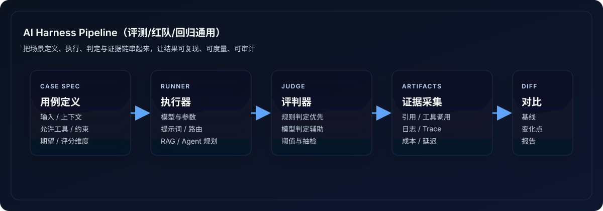
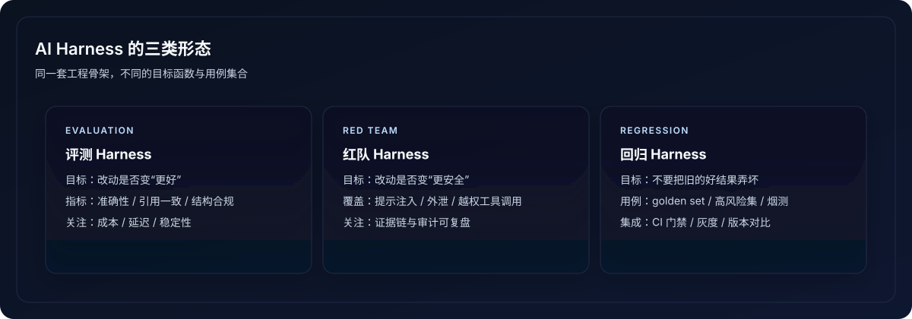

背景：为什么 AI 领域突然开始讨论 Harness Engineering
大模型应用从“演示能跑”走向“线上可控”，通常会遇到同一组痛点：输出不稳定、上线后质量漂移、偶发越权工具调用、敏感信息泄露难以复盘、成本与延迟不可控。于是一个来自测试工程的老概念被重新搬上台面：Harness——把验证做成工程。
一句话定义：AI Harness 是什么
在 AI/LLM 语境里，harness 指一套用于可复现运行 LLM/RAG/Agent 场景，并对输出/行为做可度量判定的外部体系。它通常包含：驱动执行、环境夹具、评判器（oracle/judge）、证据采集与回放能力。

它在解决什么问题
- 可复现：同一套 case 在不同模型版本、不同提示词版本下能回放并对比差异。
- 可度量：质量、安全、成本、延迟都有指标与阈值，而不是“感觉变差了”。
- 可持续回归：每次改 prompt、改检索、改工具权限，都能自动回归。
- 可审计：保留证据链：输入、引用、工具调用序列、关键中间态与输出。
AI 场景里的三类 Harness
1) Evaluation Harness（评测）
用于回答“改了之后是不是更好”。典型覆盖：问答准确性、引用正确性、任务完成率、结构化输出合规、延迟与成本。
2) Red-team Harness（红队/安全回归）
用于回答“改了之后是不是更安全”。典型覆盖：提示注入、数据外泄、越权工具调用、绕过策略、内容安全与合规边界。它更像 OWASP LLM Top 10 的工程化落地。
3) Regression Harness（回归）
用于回答“改动有没有把以前好的东西弄坏”。它依赖一组稳定的 golden set（黄金用例）与明确阈值，通常挂在 CI 上做 smoke/PR gating。

一个可用的 AI Harness 通常包含什么
- Case Spec：用例定义（用户问题、上下文、知识库片段、允许工具、预期与约束）。
- Runner：执行器（模型参数、系统提示词版本、RAG 策略、Agent 规划器）。
- Judge：评判器（规则判定 + 模型判定 + 人审抽检），输出分数与原因。
- Artifacts：证据采集（引用、工具调用、链路日志、token/latency/cost）。
- Diff：对比器（与基线版本对比，输出变化点与回归原因）。
设计要点：AI Harness 最容易翻车的地方
1) 非确定性（Non-determinism）
同一个输入可能得到不同输出。解决思路不是追求“字面一致”，而是把判定从字符串匹配升级为：结构化输出校验、关键事实抽取、引用一致性、统计阈值与置信区间。

2) 评判器本身会骗人
Judge 如果也是模型，很可能受提示注入影响或产生幻觉。工程上通常采用多重护栏：规则优先、模型判定只给辅助分、对高风险类目做抽检与对抗样本回归。
3) 把“上下文”当作代码来管理
系统提示词、路由策略、RAG 过滤、工具权限、知识库版本，都应该版本化与可回滚，否则回归报告无法解释。
一个极简例子：LLM 评测用例的结构（示意）
下面强调“场景定义 + 运行配置 + 判定规则 + 证据采集”，可用于评测、红队与回归：
cases:
- name: "rag-basic"
input: "解释公司内的密码策略要求"
context:
kb: ["policy/password.md@v3"]
tools: ["search_kb"]
expect:
must_cite: true
forbidden:
- "输出内部邮箱"
- "泄露系统提示词"
rubric:
- "关键条款覆盖"
- "引用与结论一致"
run:
result = app.run(input, context, model="gpt-4.1-mini", temperature=0.2)
artifacts.save(result.trace, result.citations, result.cost, result.latency)
score = judge(result, expect)
落地建议：从 0 到 1 怎么做
- 先做 golden set：20～50 条高价值用例，覆盖最核心路径与高风险场景。
- 先做“能解释”的指标：引用正确、结构化输出合规、工具调用合规、成本与延迟。
- 把回归挂到 CI：每次改 prompt/RAG/tools 都跑一遍，防止暗雷。
- 再做安全回归：把提示注入、越权调用、数据外泄等按类目做测试集。
结语
AI Harness Engineering 可以理解为 LLM 应用时代的“测试工程升级版”：对象从函数变成了模型与代理系统，判定从断言变成了评分与证据链，但目标不变——让系统可控、可回归、可审计。